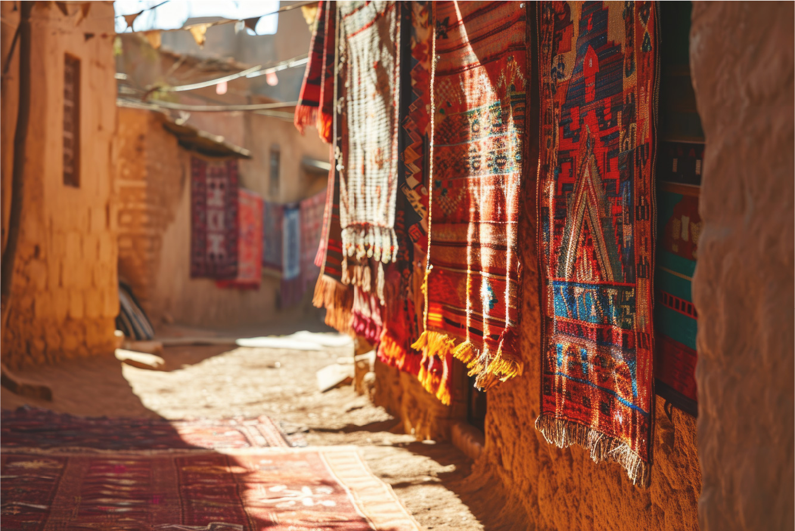

Riyo OKAMOTO
三重県出身 愛知県在住
卒業後、飲食店でサービスに従事しワインが大好きになる。
それをキッカケにヨーロッパへ何度か足を運ぶうちに
香りの世界に魅せられ香りに纏わる仕事に転職。
販売、店舗運営、スタッフ育成に関わらせていただく中で
“なにか感動できるもの”“社会に貢献できるもの”を
創り出すスキルが欲しいとおもい
webデザインの勉強をスタートする。
今まで培ってきた仲間とのコミュニケーションや
お客様のニーズや要望をお伺いし心や想いに寄り添えるような
デザイナーを目指していきたい